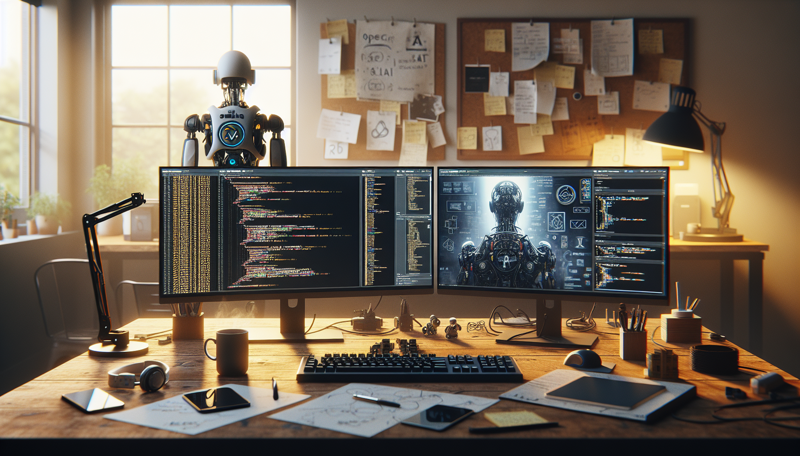

OpenClaw started the way many meaningful projects do: not as a grand startup idea, not as a polished product roadmap, but as a friction point I kept running into while building. I wanted something more open, more hackable, and more transparent than the closed systems I was experimenting with. I wanted a project I could understand end to end, improve in public, and share with other developers and makers who like to learn by taking things apart.
That is what OpenClaw became. At its core, OpenClaw is an open source build designed around experimentation, modularity, and practical AI workflows. It is a project shaped by the belief that tools become more valuable when people can inspect them, remix them, and contribute to them. If you are a developer, maker, or AI enthusiast, this post is the honest version of why I built it, what problems it tries to solve, and what I have learned by building it in the open on GitHub.
This is not a launch-day marketing story. It is a builder-to-builder story about constraints, design tradeoffs, dead ends, and the reason open source still matters in the AI era.
OpenClaw is an open source project built to make AI-driven building more accessible, inspectable, and extensible. The exact shape of the project continues to evolve, but the guiding idea is simple: create a system that developers can actually understand, fork, and adapt to their own workflows without being locked into a black box.
I use the name OpenClaw because it reflects how I think about the project. A claw is a tool for grabbing, moving, testing, and manipulating things in the real world. OpenClaw is meant to do the same in software: help builders reach into complex AI workflows, connect pieces together, and turn abstract capabilities into usable systems.
Instead of hiding everything behind a polished interface and proprietary layers, OpenClaw is being built as a transparent GitHub-first project. The source code, architecture decisions, and implementation details are part of the value. For me, the code is not just the product. The code is also the documentation of the thinking.
That matters because many AI tools today feel magical right up until the moment you need to customize them. Then the magic becomes friction. OpenClaw exists because I wanted a system that stayed useful after the demo.
Before building OpenClaw, I spent a lot of time trying different AI tools, automation stacks, and developer frameworks. Some were impressive. Some were elegant. A few were genuinely productive. But there was a recurring problem: the more powerful the tool seemed at first, the harder it often became to control once I needed it to fit a real workflow.
I kept seeing the same issues:
That last point mattered a lot to me. I do not just want to use a system. I want to know how it works. I want to see where data flows, where prompts are handled, where decisions are made, and where the weak spots are. For builders, visibility is not a luxury. It is the thing that makes iteration possible.
OpenClaw began as a response to that gap. I wanted an AI project that was useful in practice but still understandable under the hood. Something you could run, inspect, break, rebuild, and improve.
Building in public was not just a distribution decision. It was part of the product philosophy from day one. If OpenClaw was going to stand for openness, then it had to be open in more than name only.
GitHub is the natural home for that kind of project because it turns development into a visible process. Commits show progress. Issues reveal real problems. Discussions surface better ideas. Pull requests create a record of how the project changes over time. For builders, that transparency is incredibly valuable.
I also built OpenClaw publicly because I wanted accountability. When you work privately, it is easy to endlessly refine, overthink, and hide imperfect decisions. Public building changes that. It pushes you to ship, explain, and improve in response to real feedback.
There is also a practical reason. The best open source projects often become better because other people use them in ways the original creator did not predict. Developers try edge cases. Makers connect hardware. AI enthusiasts test prompts and workflows you never would have thought of yourself. By putting OpenClaw on GitHub, I am not just publishing code. I am inviting pressure-testing from the community.
That pressure is useful. It exposes assumptions. It reveals weak abstractions. It forces clarity. And in a space as fast-moving as AI, clarity is worth a lot.
Every project needs a set of constraints, otherwise it turns into a pile of features. OpenClaw has been shaped by a few principles that help me decide what belongs in the build and what does not.
These principles sound obvious, but they are easy to lose once a project grows. Every new feature creates complexity. Every integration introduces hidden assumptions. Every convenience layer risks obscuring what is really going on. OpenClaw is my attempt to resist that drift and keep the build grounded.
I am especially interested in making the project useful for people who sit between categories: developers who like hardware, makers who are learning AI, AI enthusiasts who are becoming more technical, and indie builders who need systems they can actually control. That overlap is where some of the most interesting work is happening right now.
One of the biggest lessons from building OpenClaw is that simplicity is harder than sophistication. It is easy to add layers. It is much harder to design something that feels flexible without becoming confusing.
I also learned that naming the problem clearly is often more important than solving it quickly. In AI projects especially, there is a temptation to move fast toward output and demos. But if you do not define the real friction point, you end up building around symptoms instead of causes. OpenClaw improved once I stopped asking, “What features should this have?” and started asking, “What makes builders lose control of the system?”
Another lesson: people care more about honest tradeoffs than polished claims. When you share a project publicly, you do not need to pretend everything is finished. In fact, it is more useful to explain what is still rough, what assumptions you are testing, and where the architecture may change. That invites better contributions and builds more trust than pretending the roadmap is already solved.
And finally, I learned that open source still creates a different kind of energy. There is something powerful about a project that says, “Here is how it works. Take it apart.” That invitation changes the relationship between creator and user. People stop being passive consumers and become collaborators, testers, and co-builders.
OpenClaw is not trying to be everything for everyone. It is being built for a specific kind of person: someone who wants capability without losing visibility.
If that sounds like you, OpenClaw may be a good fit if you are:
It may be less useful if what you want is a perfectly abstracted, no-code, fully managed experience. That is not a knock against those tools. They have their place. But OpenClaw is for the people who want to get closer to the mechanism.
I built it because I am that kind of user. And usually the most sustainable projects come from building the thing you genuinely wish existed.
OpenClaw is still a living build, which means the most exciting part is not just what it is today, but what it enables next. I want the project to keep becoming more useful without losing the qualities that made it worth building in the first place: openness, clarity, and hackability.
The next phase is about refinement and community gravity. That means improving the developer experience, tightening the architecture, expanding documentation, and making it easier for contributors to understand where they can jump in. It also means continuing to test the project against real workflows rather than abstract ideas.
Long term, I see OpenClaw as more than a repository. I see it as a reference build for how open AI projects can be created in a way that invites learning, contribution, and experimentation. Not just software you use, but software that teaches you something by existing in the open.
If that resonates with you, then you already understand why I built it.
So, what is OpenClaw and why did I build it? OpenClaw is my attempt to create an open source AI builder project that stays useful after the initial excitement wears off. It is a GitHub-first build for people who want to inspect the system, shape it to their needs, and participate in how it evolves. I built it because I kept running into tools that were powerful but opaque, flexible until they were not, and easy to demo but hard to truly own.
OpenClaw is the alternative I wanted for myself: transparent, modular, practical, and built in public. It reflects a builder mindset more than a product posture. And if it succeeds, it will not be because it stayed closed and polished. It will be because it became useful in the hands of other builders.
If you are curious, skeptical, inspired, or already thinking about how you would extend it, that is exactly the point.
CTA: Follow the OpenClaw build on GitHub and see the full source code.